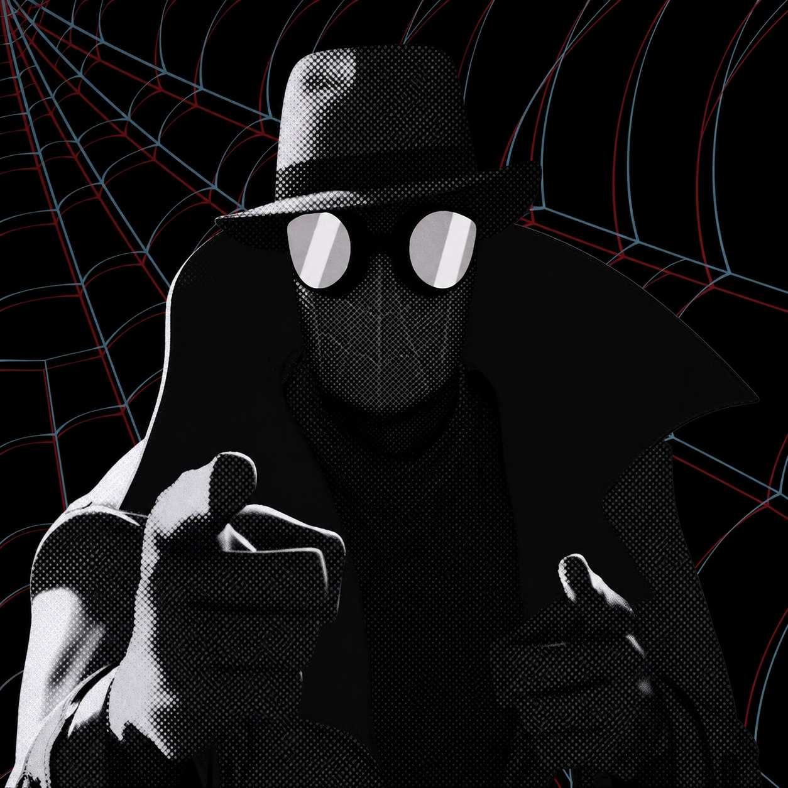

HÉROES RELACIONADOS
ORIGEN BIOLÓGICO
HUMANO POTENCIADO POR UN DIOS ARÁCNIDO MÍSTICO
"Donde yo voy, el viento sopla frío... y la lluvia limpia el pecado de las calles."
~ Peter Parker NoirViviendo en una Nueva York golpeada por la Gran Depresión de 1933, este Peter Parker obtuvo dones arácnidos de tintes místicos tras abrir un artefacto antiguo que liberó una horda de arañas malditas. Investigador privado implacable y justiciero sigiloso, viste una gabardina negra y un sombrero fedora clásico. A diferencia de sus contrapartes multiversales, opera en un espectro acromático (es daltónico) y utiliza revólveres balísticos convencionales de época para erradicar gángsters y facciones mafiosas.
PROCEDENCIA
TIERRA-90214 / NUEVA YORK 1933

UNIVERSO
MARVEL NOIR / SPIDER-VERSE